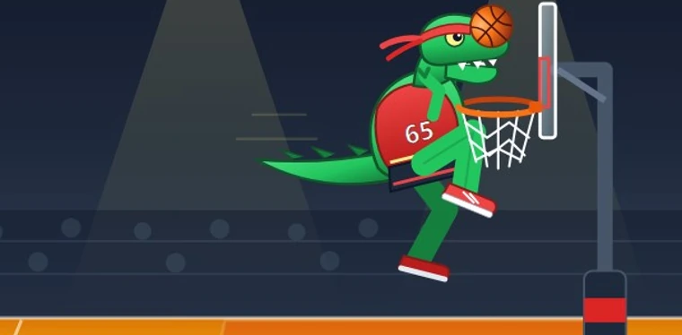

动画对照
实验记录
同一套配置在同一会话里依次完成两题。两列耗时沿用当时的记录。
Generate an SVG of a pelican riding a bicycle (animated HTML)用SVG绘制霸王龙三步上篮（动画HTML）
| 模型 | 入口 / 配置 | 鹈鹕 | 霸王龙 |
|---|---|---|---|
| Claude Fable 5.2 | Claude Code · Extra | 未记录 | 未记录 |
| DeepSeek V4.1 Flash 1017 | DeepSeek Harness · max | 31:50 | 25:51 |
| Gemini 4 Neon | Gemini App · 任务模式 | 约 3 分钟 | 约 5 分钟 |
| GLM-5.4 | chat.z.ai · 最高 | 约 20 分钟 | 约 50 分钟* |
| GPT-6.2 Astra | Codex · Ultra | 9:30 | 9:23 |
| Hy4 | DeepSeek Harness · High | 9:45 | 23:08 |
| Kimi K3.1 Pro | Zcode · 最高 | 10:52 | 15:45 |
| Qwen4-Max | Zcode | 3:49 | 5:18 |
点击时间可打开原页。* GLM-5.4 遇到服务拥挤，留下中间稿，后由 GLM-5.3 Flash 接力。约 50 分钟包含失败及接力过程。
看脚与踏板
一圈中，脚、曲柄和踏板的位置需要跟着同一运动相位，才看得出鹈鹕在发力。
看手与球
上篮的关键帧要能读出起步、起跳、出手和入网。阶段字幕可以提示节奏，身体、球和篮筐的空间关系决定动作能否成立。
